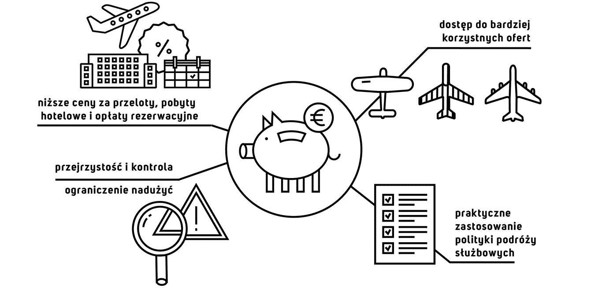

Podróże służbowe stanowią znaczącą pozycję w budżetach firm. Zdając sobie z tego sprawę, firmy „Best in Class”, używają narzędzi pozwalających na korzystanie z najlepszych dostępnych ofert przelotów i noclegów hotelowych. Dodatkowo, potrafią panować nad budżetem pojedynczych wyjazdów osiągając współczynnik 80% realizacji wydatków w zaplanowanym budżecie. Pozostali tracą potencjalne korzyści wynikające z lepszych cen, ponosząc też dodatkowe koszty będące konsekwencją braku efektywności i nadużyć pracowników.
Posiadanie rozwiązania do zarządzania całym procesem Travel & Expense ogranicza jego koszty nawet o 23% (wg. danych z raportu Hermes Consulting Group). Dzieje się tak dzięki uzyskaniu dostępu do lepszych cen, większej przejrzystości i redukcji kosztów agencyjnych związanych z dokonywaniem rezerwacji. Jak również ze względu na podniesienie świadomości użytkowników. Szereg funkcjonalności automatyzujących pracę pozwala na uzyskanie wyższej produktywności pracowników podróżujących i rozliczających wydatki, podobnie jak księgowych, co przekłada się na jeszcze szybszy rozwój biznesu.
Pod tym względem atutami naszego rozwiązania są:
